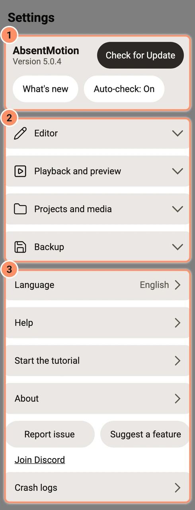
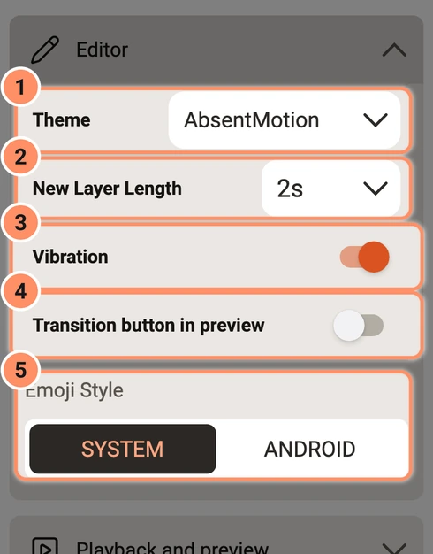

Instellingen
Alle instellingen in het zijmenu van het startscherm, met hun standaardwaarde.
Op deze pagina
Tik op de menuknop linksboven op het startscherm om het zijmenu Instellingen te openen. Bovenaan staat een kaart met de versie en de updateknoppen. Daaronder staan vier groepen die dicht beginnen (tik op een groep om hem te openen) en nog een paar rijen.

Versie en updates
De kaart bovenaan toont de versie die je hebt en drie knoppen.
- Controleren op update kijkt één keer, nu meteen, of er een nieuwere versie is. Is die er, dan toont het venster de versie en de downloadgrootte. Wijzigingen opent de releasenotes, en Update downloaden downloadt in de app het passende app-bestand (de Latest- of Compatible-versie, en op Chromebooks met een chip van Intel of AMD het bestand daarvoor), met een voortgangsbalk en Annuleren. Staat het in Android nog niet aan, dan vraagt de app je eerst om Toestaan van deze bron aan te zetten voor AbsentMotion. De app controleert het bestand met de checksum en de ondertekeningssleutel van de release, en daarna installeert Android het; op Android 12 en nieuwer gebeurt dat zonder bevestigingsvenster als het systeem dat toestaat, en daarna opent een melding de app (oudere Android-versies vragen je om te bevestigen). Op Windows, Mac en Linux slaat Installeren en herstarten je project op, sluit de app, installeert de update en opent de app weer. Kan het passende bestand niet worden gevonden, dan opent Downloaden de releasepagina. Op een Samsung-telefoon kan Auto Blocker de installatie tegenhouden: zie Problemen oplossen.
- Wat is er nieuw opent de notities van de versie die je hebt: de nieuwe functies en elke oplossing, in groepen. Zie Wat is er nieuw.
- Automatisch controleren: aan of Automatisch controleren: uit laat zien of de app bij elke start naar een nieuwe versie zoekt. Tik erop om te wisselen. De app vraagt je één keer of hij dit mag doen. Staat het aan, dan doet de app bij het openen één aanvraag naar GitHub voor het nieuwste versienummer. Verder verstuurt hij niets, en hij downloadt of installeert nooit iets uit zichzelf.
Op een computer is Instellingen een venster met de pagina's links op een rij. Daar heeft de pagina Updates de schakelaar Bij elke start van de app op een nieuwe versie controleren, Controleren op update en de versie, en open je de notities van de versie via de pagina Over.
Editor
- Thema. Systeemstandaard (de standaard bij een nieuwe installatie: Licht of Donker, afhankelijk van de donkere modus van je telefoon of computer), Licht (een donkere editor en een warm, licht startscherm), Donker (overal donker, ook het startscherm), Daglicht (overal licht) of Aangepast. Bij de eerste start zie je Kies je thema, en ook bij de eerste start na de update naar 5.1 als je nog nooit een thema hebt gekozen. Themabestand importeren… laadt een thema uit een klein bestand (zie hieronder). Daaronder stelt Themakleur de accentkleur in van knoppen, schakelaars en andere markeringen: Standaard (de eigen kleur van het thema), Blauw, Groen, Paars, Roze of Aangepast…, dat een kleurkiezer opent. App-lettertype stelt het lettertype in van de menu's en labels van de app, niet van de tekst in je projecten: Standaard of een van de lettertypen die bij de app horen of die je hebt geïmporteerd.
- Lengte nieuwe laag. Hoe lang nieuwe lagen duren: 1 tot 10, 15, 20, 25, 30, 45 of 60 seconden. De standaard is 2.
- Trillen. Kleine trillingen op de tijdlijn bij vastklikken, lang indrukken en de volgorde wijzigen. Standaard aan.
- Overgangsknop in voorbeeld. Standaard uit. De ronde knop waarmee je een overgang toevoegt, staat normaal rechtsonder in het tijdlijngebied. Zet dit aan om hem in plaats daarvan linksonder in het voorbeeld te zetten. Zie Overgangen en animaties.
- Emojistijl. SYSTEEM (de emoji van je telefoon, de standaard) of ANDROID (het emojilettertype dat bij de app hoort, op elke telefoon hetzelfde).

Aangepaste thema's
Een themabestand is een klein tekstbestand in JSON-formaat van maximaal 64 KB met een optionele name en de kleuren die je wilt veranderen, geschreven als #RRGGBB of #AARRGGBB. Kleuren die je weglaat, houden de AbsentMotion-look. Bijvoorbeeld:
{"name": "Mint", "Accent": "#5BD6A4", "HomeAccent": "#1B7A4A"}De kleurnamen zijn de kleuren van de editor en het startscherm: TopBar, PreviewBg, TimelineBg, Panel, PanelInset, Button, Field, FieldHi, Chosen, Well, Deepest, Line, MenuLine, KeyDigit, KeySymbol, Scrim, PressEditor, OnDark, OnDarkDim, Caption, Faint, Inactive, OnScrim, Accent, AccentLit, AccentGlow, AccentDeep, OnAccent, Cool, CoolDeep, Gold, Favorite, Warning, Bookmark, LayerBar, LayerBarStripe, TextBar, TextBarStripe, AudioBar, AudioWave, OnBar, OnAudioBar, HomeBg, Card, SheetBg, Navy, HomeAccent, OnNavy, OnNavyAccent, NavyHi, NavyLine, HomeInk, HomeMid, HomeDim, HomeFaint, HomeLine, HomePanel, HomeDrawer, SwitchOff, Thumb, MenuScrim en PressHome. Er wordt één aangepast thema tegelijk bewaard; importeer je een nieuw bestand, dan vervangt dat het oude en wordt het meteen toegepast.
Afspelen en voorbeeld
- Voorbeeldkwaliteit. VOLLEDIG, HALF of KWART (standaard Volledig): hoe scherp het voorbeeld in de editor is. Lager is sneller op een trage telefoon en verandert niets aan exports. Dezelfde schakelaar zit in de voorbeeldbalk van de editor.
- Grafische weergave. AUTOMATISCH of OPENGL (standaard Automatisch): hoe de app het voorbeeld en de export tekent. Automatisch gebruikt Vulkan en schakelt over op OpenGL als Vulkan niet kan starten. Sluit de app vanzelf af terwijl de grafische weergave opstart, dan gebruikt de volgende start de andere. Kies OpenGL als het voorbeeld of exports er op deze telefoon verkeerd uitzien. De regel onder de schakelaar zegt welke in gebruik is. Met OpenGL ontbreken een paar AI-tools; zie Vereisten en versies.
- Resampling bij afspelen. LAAG, HOOG of ULTRA (standaard Ultra): de kwaliteit van de geluidsresampling, als de editor afspeelt en als het geluid voor een export wordt gemixt.
- Voorbeeldkopieën van grote video's gebruiken. Standaard aan. Voor video's groter dan 1920 x 1080, of met weinig keyframes, maakt de app op de achtergrond een kleine, lichte kopie en gebruikt die voor het voorbeeld. Exports gebruiken altijd het originele bestand. De kopieën worden bewaard in een cache van maximaal 2 GB.
- Voorbeeldkopieën wissen verwijdert ze. De rij toont hoeveel ruimte ze innemen.
- Voorbeeld vooraf renderen als de app inactief is. Standaard aan. Pauzeer je even, dan rendert de app op de achtergrond de frames rond de afspeelkop, tot het geheugen dat daarvoor is gereserveerd vol is. Een dunne groene lijn onderaan de tijdliniaal markeert de frames die klaar zijn, en die spelen soepel af. Een wijziging gooit alleen de frames weg die erdoor veranderen. Zet het uit om batterij of geheugen te sparen.
Projecten en media
- Importkaart tonen in de projectlijst. Standaard uit. Zet bovenaan de projectlijst een kaart met Bestand kiezen.
- Bundelmap. Waar projectbundels (
.absproj) worden opgeslagen. Tik erop om één keer een map te kiezen; daarna gaat elke bundel meteen daarheen. Standaardbundelmap gebruiken zet het terug naar Documents/AbsentMotion. Je kunt het ook wijzigen via Opslaan in op de pagina Projectbundel bij Exporteren. Is de map niet meer bereikbaar, dan staat dat in een notitie eronder; tik erop om opnieuw een map te kiezen. - Kopie van geïmporteerde media in het project bewaren. Standaard aan. De foto, video of audio die je toevoegt, wordt in het project gekopieerd, zodat hij blijft werken als het origineel wordt verplaatst of verwijderd. Verplaats je je bestanden nooit, dan kun je dit uitzetten om opslagruimte te besparen.
- Uitsnijkwaliteit. Standaard of AI-achtergrondverwijdering 2.0: wat voor uitsnede je krijgt als je de achtergrond van een foto verwijdert. Zie AI-tools.
- Ondertitelmodel verwijderen. Alleen te zien als het spraakmodel voor ondertitels is gedownload. Toont de grootte van het bestand en verwijdert het; de app downloadt het opnieuw als je later weer ondertitels gebruikt.
- Model voor AI ... verwijderen. Eén rij voor elk gedownload model van AI Verbeteren of AI Vloeiend, met de grootte. Tik erop om het model te verwijderen; de app downloadt het opnieuw zodra het weer nodig is.
- Add-on voor videodownloader verwijderen. Alleen te zien als de add-on is gedownload. Toont hoeveel ruimte de add-on inneemt en verwijdert hem; de Videodownloader vraagt er opnieuw om als je hem weer gebruikt. Zie Het startscherm.
- Grafische chip gebruiken voor AI. Standaard alleen aan voor nieuwere grafische chips waarvan bekend is dat AI Vloeiend en AI Verbeteren er veilig op werken; op andere telefoons draaien die op de processor. Zet je het aan voor een andere chip, dan vraagt de app eerst om bevestiging, omdat sommige telefoons erdoor kunnen vastlopen. Zie AI-tools.
Back-up
- Back-up van alle projecten maken, Herstellen vanuit back-up en Wekelijkse automatische back-up (alleen projecten) (standaard uit). Zie Projecten, back-up en importeren.
Tools
Tools opent Tools aanpassen: vink de tools aan die je wilt zien en sleep ze in de gewenste volgorde, apart voor de Toolspagina en In een project. Resetten zet alle tools terug in de gebruikelijke volgorde.
Taal
De rij Taal toont de huidige taal en opent de lijst met de 26 talen: Engels, Indonesisch, Hindi, Portugees (Brazilië), Spaans (Latijns-Amerika), Spaans (Spanje), Filipijns, Vietnamees, Thai, Maleis, Arabisch, Perzisch, Urdu, Turks, Russisch, Bengaals, Japans, Koreaans, Chinees (traditioneel), Chinees (vereenvoudigd), Frans, Duits, Italiaans, Pools, Nederlands en Oekraïens. Kies je er een, dan wordt die meteen toegepast. Op Windows, Mac en Linux wordt de nieuwe taal gebruikt nadat je de app opnieuw hebt gestart.
Over, Help en andere rijen
- Help opent deze handleiding in de app, zonder verbinding.
- Tutorial starten start een rondleiding van 5 minuten. Je maakt een korte animatie in een oefenproject, dus je eigen projecten blijven onaangeroerd. Stop je halverwege, dan wordt de rij Tutorial hervatten en verschijnt er een tweede rij, Tutorial opnieuw starten. Het startscherm biedt de rondleiding ook aan tot je Niet meer vragen kiest.
- Over toont de versie, een knop die de notities van deze versie opent, de licentie (GNU General Public License v3.0), een notitie dat AbsentMotion een onafhankelijk project is, Opensourcelicenties (de volledige licentietekst van elke bibliotheek die de app gebruikt) en twee links die in je webbrowser openen: Startpagina van het project (de GitHub-repository) en Website en handleiding (de AbsentMotion-website met deze handleiding).
- Probleem melden en Functie voorstellen, de twee knoppen onder Over, openen in je webbrowser het formulier voor bugmeldingen en het formulier voor ideeën. Lid worden van Discord eronder opent de uitnodiging voor de Discord-server van AbsentMotion.
- Crashlogs toont de crashes die de app heeft vastgelegd. Tik op een crash om hem te lezen en gebruik Kopiëren om hem te kopiëren, bijvoorbeeld om mee te sturen met een bugmelding. Zie Problemen oplossen.